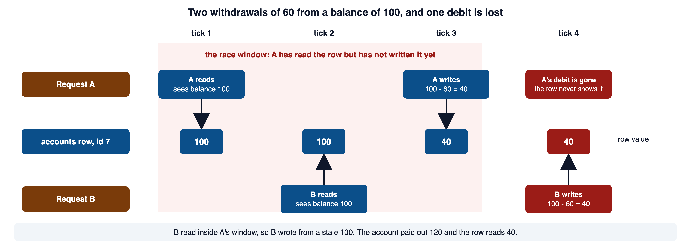
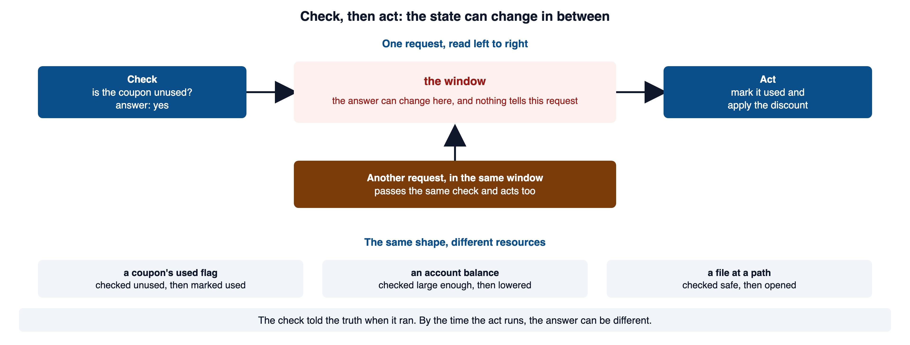
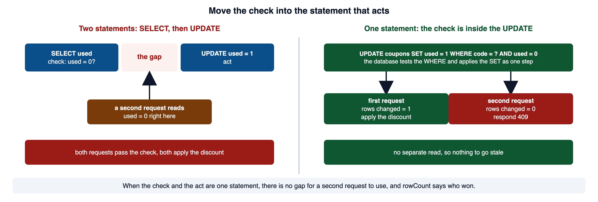
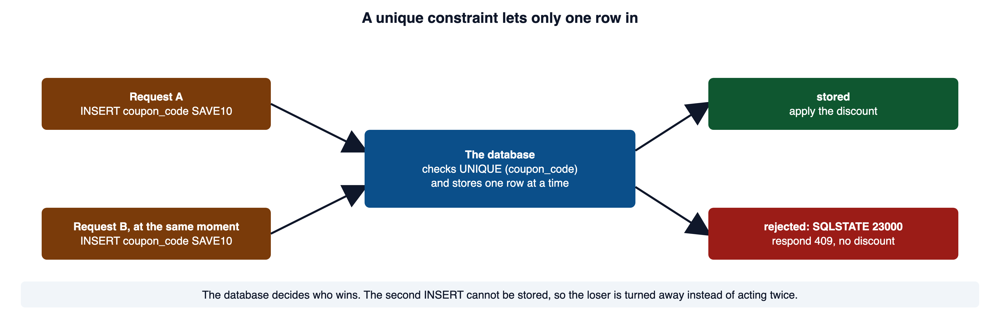
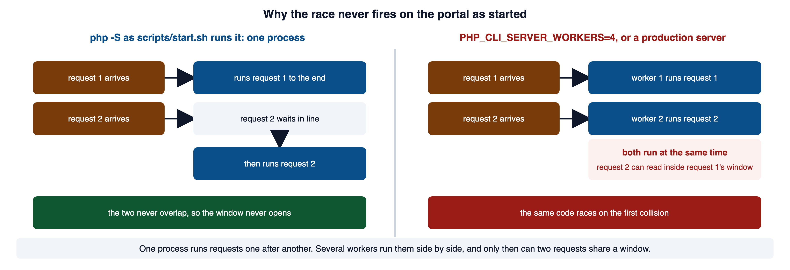

Read this page with your course environment open, so you can type each example into a small PHP file and watch what it does. Red code blocks show a shape to recognize and never ship. Green code blocks show the pattern to copy.
1Required reading
These two are required reading for the appendix. This page teaches everything the practice quiz and the forum need; the readings give the same material in the industry's own words, which is what a scanner finding, a CVE advisory, or a bug report will use.
- OWASP Top 10:2025 A06 Insecure Design. The category race conditions map into. Its list of weaknesses includes CWE-362, and it describes insecure design as missing or ineffective control design: a safeguard the design never asked for, rather than a typo in the code.
- OWASP Race Conditions. The operative reference for this topic. It defines the weakness as two or more threads or requests reaching shared state at the same time, names time-of-check to time-of-use as a common subtype, and lists the same database defenses taught below: a conditional update, a row lock, a unique constraint, and an idempotency key.
Race conditions carry two weakness numbers you will meet in advisories: CWE-362 for the race condition itself, and CWE-367 for the time-of-check to time-of-use variant. Both are linked in section 10.
2What a race condition is
A race condition (CWE-362) is a defect where the result depends on the order in which two operations happen to run at the same time. The clearest case is one value that two requests read, change, and write back.
Here is a withdrawal handler written with the portal's q and q_one helpers from lib/query.php (Module 04 section 6). Every value travels as a bound ? parameter, so there is no injection here. The only defect is the space between the two queries.
<?php
require __DIR__ . '/lib/query.php';
// Read the balance...
$row = q_one('SELECT balance FROM accounts WHERE id = ?', [$accountId]);
$balance = (int) $row['balance'];
// ...decide...
if ($balance >= $amount) {
// ...then write the new balance. A second withdrawal can read the same
// starting balance before this line runs, and believe the money is there.
q('UPDATE accounts SET balance = ? WHERE id = ?', [$balance - $amount, $accountId]);
}Vulnerable. Do not use this pattern.
The handler reads the balance, checks it, then writes the new balance. Those are separate steps, and another request can run its own steps in the gaps between them.
The window is the time between A's read and A's write. Any read that lands inside it sees a value that is about to be wrong.

Open full-size image (opens in a new tab)You can force that interleaving to happen in one script, with two database connections standing in for the two requests. Save this as a file and run it with php.
<?php
// Two connections to one SQLite file stand in for two requests.
$file = sys_get_temp_dir() . '/race-demo.sqlite';
@unlink($file);
$a = new PDO('sqlite:' . $file);
$b = new PDO('sqlite:' . $file);
$a->exec('CREATE TABLE accounts (id INTEGER PRIMARY KEY, balance INTEGER NOT NULL)');
$a->exec('INSERT INTO accounts (id, balance) VALUES (7, 100)');
$read = 'SELECT balance FROM accounts WHERE id = 7';
$write = 'UPDATE accounts SET balance = ? WHERE id = 7';
$seenA = (int) $a->query($read)->fetchColumn(); // A reads
$seenB = (int) $b->query($read)->fetchColumn(); // B reads, before A has written
echo "A reads $seenA, B reads $seenB\n";
if ($seenA >= 60) { $a->prepare($write)->execute([$seenA - 60]); echo 'A writes ', $seenA - 60, "\n"; }
if ($seenB >= 60) { $b->prepare($write)->execute([$seenB - 60]); echo 'B writes ', $seenB - 60, "\n"; }
echo 'balance now: ', $a->query($read)->fetchColumn(), "\n";
unlink($file);A reads 100, B reads 100
A writes 40
B writes 40
balance now: 40The formal entry for this weakness is CWE-362, linked in section 10. It describes a code sequence that needs exclusive access to a shared resource while a timing window lets another sequence change that resource, and it lists integrity among the consequences. PortSwigger: Race conditions gives the same definition from the tester's side, and is the source for the term "race window."
3Check-then-act and time-of-check to time-of-use
The withdrawal is one instance of a shape you will see again and again: check a condition, then act on it, with the state free to change in between. That shape has a name.
The shape is the same whatever the resource is.

Open full-size image (opens in a new tab)A coupon that may be claimed once is the textbook case.
<?php
require __DIR__ . '/lib/query.php';
// Check: is this coupon still unused?
$coupon = q_one('SELECT code, percent_off, used FROM coupons WHERE code = ?', [$code]);
if ($coupon !== null && (int) $coupon['used'] === 0) {
// Another request can pass this same check in the gap, before either
// request has written used = 1.
q('UPDATE coupons SET used = 1 WHERE code = ?', [$code]);
apply_discount($cart, $coupon);
}Vulnerable. Do not use this pattern.
Two shoppers submit the same code at the same instant. Both requests read used = 0, both pass the check, both write used = 1, and both apply the discount. The row ends at used = 1, which looks correct in the database, while the discount was granted twice.
The same shape appears on the filesystem, which is where TOCTOU was first studied.
<?php
// Check that the path is a readable file and not a symbolic link...
if (is_readable($path) && ! is_link($path)) {
// ...then open it. An attacker who can replace $path in this gap points
// it at a file you never checked.
$data = file_get_contents($path);
}Vulnerable. Do not use this pattern.
Between the check and the open, an attacker who can influence the path replaces the checked file with a symbolic link to a file you never inspected. The open follows the swap. The check told the truth about a file that is no longer the one being opened.
The formal entry is CWE-367, linked in section 10. Its second demonstrative example is this exact shape in C: the program checks a file with access() and then opens it by name with fopen(), and a symbolic link swapped in between sends the open to a file the check never saw. PHP Manual: is_link documents the check the example above runs: it answers whether the filename is a symbolic link at the moment it is asked.
4Where it bites in web applications
Change the interpreter and the resource, and the shape holds. Every row below is a check on shared state followed by an act on it, with a window in between.
| Scenario | The window between check and act |
|---|---|
| Coupon or gift card claimed once | two requests both read the coupon as unused before either marks it used |
| Balance or withdrawal check | two withdrawals both read a balance that covers them, and both proceed |
| Inventory oversell | the last item in stock is promised to two buyers at once |
| One-time token reuse | a password-reset or MFA token is consumed by two parallel requests |
| Rate limit bypass | several guesses at a code all pass the "attempts left" check before any is counted |
| File check-then-open | code checks a file, an attacker swaps it, and the code opens the swapped file |
The value at risk differs across these: a discount, a balance, a seat, a reset link, an extra guess, a file. The defect does not. Learn to see a check on something more than one request can touch, followed by an act on it, and you will see the same weakness in all of them.
The portal's own lib/tokens.php has this shape. token_check reads a reset token and token_burn marks it used in a separate statement, so two requests with the same link can both pass the check before either burns it.
PortSwigger's page in section 2 calls the first rows "limit overruns," the best-known kind of race condition, and gives redeeming a gift card several times and getting past a brute-force limit as its examples. OWASP WSTG-BUSL-05: Test Number of Times a Function Can Be Used Limits is the tester's version of the coupon row: a shop allows one discount per transaction, and the tester asks whether the same discount can be applied more than once.
5Closing the gap with one atomic operation
The fix is one idea: do the check and the act as a single operation the database performs atomically, so no request can catch the resource between the two.
<?php
require __DIR__ . '/lib/query.php';
// One statement does the check and the act together. The database tests the
// WHERE and applies the SET as a single step.
$changed = q('UPDATE coupons SET used = 1 WHERE code = ? AND used = 0', [$code])->rowCount();
// rowCount() answers "was I the request that changed the row?"
if ($changed === 1) {
$coupon = q_one('SELECT code, percent_off FROM coupons WHERE code = ?', [$code]);
apply_discount($cart, $coupon);
} else {
http_response_code(409);
exit('Coupon already redeemed');
}Secure. This is the pattern to copy.
q returns the executed PDOStatement, so rowCount() is available on its result. The coupon row is read only after this request has won the update, so $coupon holds a real row by the time apply_discount needs it.
Here is the same statement run twice in a row, the way two requests would run it.
<?php
$pdo = new PDO('sqlite::memory:');
$pdo->setAttribute(PDO::ATTR_ERRMODE, PDO::ERRMODE_EXCEPTION);
$pdo->exec('CREATE TABLE coupons (code TEXT PRIMARY KEY, used INTEGER NOT NULL DEFAULT 0)');
$pdo->exec("INSERT INTO coupons (code, used) VALUES ('SAVE10', 0)");
foreach (['first request', 'second request'] as $who) {
$stmt = $pdo->prepare('UPDATE coupons SET used = 1 WHERE code = ? AND used = 0');
$stmt->execute(['SAVE10']);
echo $who, ': rows changed = ', $stmt->rowCount(), "\n";
}first request: rows changed = 1
second request: rows changed = 0
Open full-size image (opens in a new tab)The same fix applies when the two steps hide behind helper names such as get_coupon and mark_coupon_used. The helper that marks the coupon used must carry AND used = 0 in its WHERE and must report how many rows it changed, and the caller must act only on 1.
The withdrawal fixes the same way. The guard moves out of PHP and into the WHERE clause, so the subtraction happens only for a row that still holds enough.
<?php
require __DIR__ . '/lib/query.php';
// The subtraction and the guard live in one statement, so a second request
// tests its amount against the already-lowered balance.
$changed = q(
'UPDATE accounts SET balance = balance - ? WHERE id = ? AND balance >= ?',
[$amount, $accountId, $amount]
)->rowCount();
if ($changed === 1) {
record_withdrawal($accountId, $amount);
} else {
http_response_code(409);
exit('Insufficient funds');
}Secure. This is the pattern to copy.
When two withdrawals arrive together, the database applies them one after another. The first lowers the balance; the second now tests its amount against the already-lowered balance, changes no row, and is rejected. The lost update from section 2 cannot happen, because there is no separate read to go stale.
The status code is deliberate. 409 Conflict tells the client that the request conflicts with the current state of the resource, which is exactly what happened: the coupon is already used, or the balance is already too low.
PHP Manual: PDOStatement::rowCount says the method returns the number of rows affected by the last DELETE, INSERT, or UPDATE the statement ran, and warns that for a SELECT the result is undefined and differs by driver, so count only after a write. W3Schools: SQL UPDATE has a live editor for the WHERE clause that picks which records change. MDN: 409 Conflict defines the response code.
6Transactions, locks, constraints, and idempotency keys
A conditional update is the cleanest fix when one statement can carry the whole decision. Some operations span several statements, and for those you reach for the database's own concurrency tools.
When the decision needs several statements, take the database's write lock before the read, so a second request waits for you. The portal runs on SQLite (db.php opens data/portal.sqlite), and SQLite's lock is taken with BEGIN IMMEDIATE. db() is the shared PDO connection db.php returns.
<?php
require __DIR__ . '/db.php';
require __DIR__ . '/lib/query.php';
// BEGIN IMMEDIATE starts a write transaction now, before the SELECT, so a
// second request cannot start its own write until this one ends.
db()->exec('BEGIN IMMEDIATE');
$row = q_one('SELECT stock FROM products WHERE id = ?', [$productId]);
$stock = (int) $row['stock'];
if ($stock > 0) {
q('UPDATE products SET stock = stock - 1 WHERE id = ?', [$productId]);
db()->exec('COMMIT');
} else {
db()->exec('ROLLBACK');
http_response_code(409);
exit('Out of stock');
}Secure. This is the pattern to copy.
PDO does not track a transaction started with a plain BEGIN statement, so the code must reach COMMIT or ROLLBACK on every path. Here is what the second connection sees while the first holds the lock, with the second connection's wait set to zero so the answer shows at once.
A: BEGIN IMMEDIATE, holds the write lock
B: SQLSTATE[HY000]: General error: 5 database is locked
A: COMMIT
B: now gets the lock, reads stock = 0On PostgreSQL and MySQL the same job is done inside a transaction by SELECT ... FOR UPDATE, which locks the rows it reads until the transaction ends, so another transaction that tries to update, delete, or lock those rows is blocked until then. SQLite has no such clause; run it there and the database answers with a syntax error.
SQLSTATE[HY000]: General error: 1 near "FOR": syntax errorThe strongest fix is often to make the duplicate impossible to store at all. A unique constraint turns a second write into a database error the application can catch.
CREATE TABLE coupon_redemptions (
coupon_code TEXT NOT NULL UNIQUE,
username TEXT NOT NULL
);<?php
require __DIR__ . '/lib/query.php';
// The constraint decides the race inside the database. The second INSERT
// cannot be stored, so the loser is turned away instead of acting twice.
try {
q('INSERT INTO coupon_redemptions (coupon_code, username) VALUES (?, ?)', [$code, $username]);
apply_discount($cart, $coupon);
} catch (PDOException $e) {
if ($e->getCode() === '23000') { // SQLSTATE 23000: integrity constraint violation
http_response_code(409);
exit('Coupon already redeemed');
}
throw $e;
}Secure. This is the pattern to copy.
Two inserts of the same code, one after the other, give this.
rae: stored
sam: rejected, SQLSTATE 23000: SQLSTATE[23000]: Integrity constraint violation: 19 UNIQUE constraint failed: coupon_redemptions.coupon_code
Open full-size image (opens in a new tab)The same constraint gives you idempotency for request retries.
A client whose connection drops mid-request often retries, and the retry can arrive as a second, identical action. Store the key with a unique constraint. The first request records the key and acts; the retry collides with the constraint and maps to the same single result. The database, not the timing, decides who wins. Stripe's API works this way: the client sends an Idempotency-Key header, and the server saves the first response for that key and returns it to every later request that carries the same key.
PHP Manual: Transactions and auto-commit documents beginTransaction, commit, and rollBack, and says a transaction started with a manual BEGIN query is not tracked by PDO. SQLite: BEGIN TRANSACTION says IMMEDIATE starts the write at once and that it fails with SQLITE_BUSY when another write transaction is active. PostgreSQL: Explicit Locking documents SELECT ... FOR UPDATE and the operations it blocks until the transaction ends. SQLite: CREATE TABLE says each row must hold a unique combination of values in a UNIQUE column, and that the default conflict action is ABORT. W3Schools: SQL UNIQUE Constraint has a live editor for it. PHP Manual: PDOException says the exception's code is the SQLSTATE error code. MDN: Idempotent defines the term for HTTP methods, and Stripe: Idempotent requests is the primary description of the key pattern.
7Why the failure is silent
A race condition is an integrity failure. Integrity is the requirement that data change only through correct operations, and a race lets data change through an operation that was correct in isolation and wrong under concurrency. Like the other integrity failures in this course, it does not look like a failure.
To hit the window you fire many parallel requests and hope two land in the same instant, and even then it reproduces only sometimes. On the portal as scripts/start.sh starts it, it never reproduces at all. The script runs php -S 0.0.0.0:8080 router.php with no worker setting, and by default the built-in server runs one single-threaded process: it accepts one request, runs it to completion, and only then reads the next one off the queue. Two requests never overlap, so the window never opens, and the vulnerable coupon in section 3 would survive any number of parallel requests aimed at it. That is not the code being safe. It is the server refusing to reproduce the bug.

Open full-size image (opens in a new tab)Since PHP 7.4 the built-in server can fork several workers when the PHP_CLI_SERVER_WORKERS environment variable is set before it starts. The manual describes it as a way to test code that needs concurrent requests, marks it experimental, and says it is not supported on Windows.
PHP_CLI_SERVER_WORKERS=4 php -S 0.0.0.0:8080 router.phpWith workers, two requests can run at the same time and the same code can race. A production server runs many workers all day, and the first collision lands.
So you catch these the way practitioners catch them: by reading the code and naming the gap between the check and the act.
PHP Manual: Built-in web server is the source for the single-process default, the PHP_CLI_SERVER_WORKERS variable, and the warning that the server is not meant for production.
8Common misconceptions
✕"I wrapped the two queries in a transaction, so the race is gone."
A transaction makes the group all-or-nothing, but at the default isolation level both requests can still read the old value before either commits. Atomicity is not isolation. Close the window with a conditional update or a lock, not with a transaction boundary alone.
✕"The demo ran fine under parallel requests, so the code is safe."
A race fires only sometimes. A run that did not double-charge is one sample, and the next thousand under real load may differ. A passing run is not a passing proof.
✕"It cannot happen, because my portal never reproduces it."
As
scripts/start.shstarts it,php -Sruns one process and never runs two requests at once, so the window does not exist locally. WithPHP_CLI_SERVER_WORKERSset, or behind a production server with several workers, the same code races on the first collision.✕"I will fix it by adding another check before the write."
A second check adds a second place the state can change under you. The number of checks is not the problem; the gap between checking and acting is. The fix removes the gap, it does not add guards.
✕"A lock in PHP will handle it."
A lock held in one PHP process does not exist to the other processes a production server runs, and it does nothing across two servers behind a load balancer. Locking that holds under concurrency lives in the database or a shared store, not in one worker's memory.
✕"No error was logged, so nothing went wrong."
A race that lands is silent. It leaves a wrong number, not an exception. Silence is the normal signature of an integrity failure, not evidence of safety.
9Check your understanding
Work these before you read the answers.
- In your own words, what makes a bug a race condition rather than an ordinary logic error?
- A coupon handler reads
used = 0and then setsused = 1. Where is the window, and what can a second request do inside it? - Two withdrawals of 60 hit an account holding 100 at the same moment. Walk through how both can succeed, and name the value that was lost.
- What does it mean for the check and the act to be atomic, and why does one conditional
UPDATEachieve that when aSELECTfollowed by anUPDATEdoes not? - After a conditional
UPDATE, what question doesrowCount()answer, and how does the code use the answer? - Why can wrapping the vulnerable code in a transaction at the default isolation level still permit the double redemption?
- Name two database mechanisms other than a conditional update that close the window, and say what each one guarantees.
- What is an idempotency key, and which race does it defend against?
- Why is a single passing run weak evidence that a race is fixed, and what is strong evidence?
- Why does the vulnerable coupon code never double-redeem on the portal as
scripts/start.shstarts it, and what does that tell you about a report of "could not reproduce"?
Answers: (1) its correctness depends on the timing of concurrent operations that share state, so the same code is right or wrong depending on how two requests interleave. (2) the window is between reading used = 0 and writing used = 1; a second request can read used = 0 in that gap, pass the same check, and apply the discount a second time. (3) both read the balance of 100 before either writes, both see 100 is at least 60, both subtract and write 40, and the second write overwrites the first, so one 60 debit is lost and the account overpays. (4) atomic means no other request can observe the operation half done; UPDATE ... WHERE used = 0 evaluates the condition and makes the change in one indivisible step inside the database, while a separate SELECT then UPDATE leaves a gap between them. (5) rowCount() answers whether this request was the one that changed the row; the code acts only when it equals 1 and returns a 409 otherwise. (6) the default isolation level can let both transactions read used = 0 before either commits, because atomicity is not isolation and the reads are not blocked, so both still pass the check. (7) a unique constraint makes a duplicate impossible to store, and a write lock taken before the read (BEGIN IMMEDIATE on SQLite, SELECT ... FOR UPDATE on MySQL or PostgreSQL) makes a second transaction wait until the first ends. (8) a client-supplied unique value, stored with a unique constraint, so a retried or duplicated request maps to the same single result instead of acting twice; it defends against duplicate-submission and retry races. (9) a race reproduces only sometimes, so one passing run is a single sample and shows only that the bug did not fire that time; strong evidence is the shape of the code, where the check and the act are one operation. (10) php -S runs one single-threaded process by default and never overlaps two requests, so the window never opens there; "could not reproduce" says the conditions for the race were absent, not that the code is safe.
10References and further study
The two required readings in section 1 and the manual pages linked through the lecture are the main references. Each entry below names what it confirms.
- CWE-362: Concurrent Execution using Shared Resource with Improper Synchronization ('Race Condition')cwe.mitre.org
The formal entry behind section 2: a code sequence that needs exclusive access to a shared resource while a timing window lets another sequence change it, with integrity among the consequences. When a finding says CWE-362, this is what it means.
- CWE-367: Time-of-check Time-of-use (TOCTOU) Race Conditioncwe.mitre.org
The formal entry behind section 3. Its second example is the
access()thenfopen()file race the PHP example mirrors. - PHP Manual: PDO::beginTransactionphp.net
Confirms that the method turns off auto-commit until
commitorrollBack, and throws if a transaction is already active, behind the warning in section 6. - PortSwigger Research: Smashing the state machineportswigger.net
James Kettle's 2023 paper on web race conditions beyond limit overruns, with the single-packet attack that makes them reproducible. Depth for section 7's point that a race is hard to hit by hand.
- CLARK: A Primer on Race Conditions and Computer Securityclark.center
Matt Bishop's treatment, which goes well beyond the web cases here.
Videos.
- Race Conditions on a Human Scale - Computerphileyoutube.com
, Computerphile, 20 minutes 13 seconds. Matt Godbolt acts out the kinds of race condition with everyday situations; watch it for section 2's idea that the result depends on who moves first.
- Race Conditions and Time of Check to Time of Use TOCTTOU Vulnerabilitiesyoutube.com
, Z. Cliffe Schreuders, 11 minutes 31 seconds. A university lecture (Leeds Beckett) on the check-then-act window in section 3, including the filesystem case.
- Topic 06, Part 04 - The Lost Update Problemyoutube.com
, Dr. Daniel Soper, 13 minutes 18 seconds. The lost update of section 2 from a database course, in the vocabulary a database designer uses.
- ACID and Race Conditionsyoutube.com
, Vlad Mihalcea, 17 minutes 42 seconds. Why a transaction at the default isolation level does not stop the race, the warning in section 6, with the Flexcoin wallet case.
- Atomic Transactions — MIT OpenCourseWareocw.mit.edu
, Chris Terman, 8 minutes 25 seconds. English closed captions and a transcript are available. Explains atomic transactions and coordinating concurrent operations, supporting the prevention discussion in section 6. This is a conceptual explanation, not a web exploitation demonstration; the PortSwigger reading above supplies the web-specific examples.